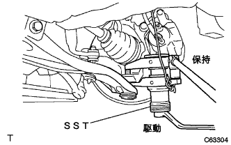

パワーステアリング リンクASSY 取り外し |
| 1. フロントタイヤ直進状態点検 |
| 2. ステアリングコラムホールカバー プレート取りはずし |
クリップ2個をはずし、ホールカバープレートを取りはずす。
| 3. ステアリングスライディング ヨークSUB-ASSY取りはずし |
 |
ステアリングホイールが回転しないようにシートベルトを取り付ける。
 |
スライディングヨークのコラム側(A)のボルトをゆるめる。
スライディングヨークのギヤ側(B)のボルトを取りはずす。
スライディングヨークとインタミディエイトシャフトに合わせマークを付け、スライディングヨークを切り離す。
 |
クリップAをはずし、ホールカバーをボデーから切り離す。
| 4. ステアリングコラムホール カバーSUB-ASSY NO.1切り離し |
 |
クリップAをはずし、ホールカバーNo.1をボデーから切り離す。
| 5. フロントタイヤ取りはずし |
| 6. エンジンアンダ カバー LH取りはずし |
ボルト2本およびスクリュ2本をはずし、エンジンアンダーカバーLHを取りはずす。
| 7. エンジンアンダ カバー RH取りはずし |
ボルト2本およびスクリュ2本をはずす。
ナットをはずし、エンジンアンダーカバーRHを取りはずす。
| 8. パワーステアリングフルード抜き取り |
| 9. エキゾーストパイプASSY FR取りはずし |
ボルトをはずし、クランプを取りはずす。
エキゾーストパイプサポートNo.4を2個取りはずす。
ボルト2本およびスプリング2本をはずし、エキゾーストパイプASSY FRを取りはずす。
| 10. プレッシャフィード チューブASSY取りはずし |
 |
ボルトをはずし、プレツシヤフィードチユーブASSYのクランプをクロスメンバから切り離す。
 |
ユニオンナットレンチ17を使用して、プレッシャフィードチューブASSYを切り離す。
| 11. フロントアクスル シャフト ナット LH取りはずし |
 |
ドライブシャフトの溝部に合わせてSSTをセットし、ハンマーを使用して、かしめを解く。
ソケツトレンチ(30mm)を使用して、ハブナットを取りはずす。
| 12. フロントアクスル シャフト ナット RH取りはずし |
| 13. スピード センサ FR LH切り離し |
ボルトをはずし、スピードセンサワイヤおよびフレキシブルホースをショックアブソーバASSYから切り離す。
 |
クリップをショックアブソーバASSYから切り離す。
 |
ボルトをはずし、スピードセンサFRをステアリングナックルから切り離す。
| 14. スピード センサ FR RH切り離し |
| 15. スタビライザ バー FR切り離し |
 |
ボルトをスパナ(10mm)で固定し、ナットを取りはずす。
クッションリテーナNo.1を2個およびクッション2個を取りはずし、スタビライザバーを切り離す。
| 16. フロントサスペンションロワーアームNo.1 LH切り離し |
コッターピンおよびキャッスルナットを取りはずす。
|  |
SSTを使用して、ロワーアームNo.1のボールジョイント部をステアリングナックルから切り離す。
| 17. フロントサスペンションロワーアームNo.1 RH切り離し |
| 18. タイロッド エンドSUB-ASSY LH切り離し |
コッターピンおよびキャッスルナットを取りはずす。
 |
SSTを使用して、タイロッドエンドをステアリングナックルから切り離す。
| 19. タイロッド エンドSUB-ASSY RH切り離し |
| 20. フロントアクスルASSY LH切り離し |
プラスチックハンマーを使用して、ドライブシャフトASSYの先端を軽くたたき、シャフトとアクスルASSYのかん合をはずす。
フロントアクスルASSYを車両外側に押して、アクスルASSYからドライブシャフトASSYを抜く。
| 21. フロントアクスルASSY RH切り離し |
| 22. フロントドライブ シャフトASSY LH取りはずし |
 |
SSTを使用して、ドライブシャフトASSYを取りはずす。
| 23. フロントドライブ シャフトASSY RH取りはずし |
 |
ブラスバーおよびハンマーを使用して、ドライブシャフトASSYを取りはずす。
| 24. エンジンASSY W/トランスアクスル支持 |
エンジンASSYおよびトランスアクスルASSYをエンジンジャッキを使用して支持する。
| 25. フロントサスペンション クロスメンバSUB-ASSY取りはずし |
 |
ボルトおよびナット2個をはずし、マウンティイングインシユレータRRをクロスメンバから切り離す。
ミッションジャッキなどで、クロスメンバを支持する。
 |
ボルト4本をはずし、ステアリングリンクASSYが付いた状態でクロスメンバを取りはずす。
| 26. パワーステアリングラックハウジングヒート インシュレータ取りはずし |
ボルトをはずし、ヒートインシユレータを取りはずす。
| 27. ステアリングコラムホール カバーSUB-ASSY NO.1取りはずし |
| 28. ステアリングインタミディエイト シャフトASSY NO.2取りはずし |
 |
インタミデイエイトシヤフトとコントロールバルブに合わせマークを付ける。
ボルトをはずし、インタミデイエイトシヤフトを取りはずす。
| 29. パワーステアリング リンクASSY取りはずし |
 |
ステアリングリンクASSY、ブラケットNo.2およびグロメットNo.2に合わせマークを付ける。
 |
ボルト4本およびナット4個をはずし、ステアリングリンクASSYをクロスメンバから取りはずす。
ブラケットNo.2およびグロメットNo.2をステアリングリンクASSYから取りはずす。